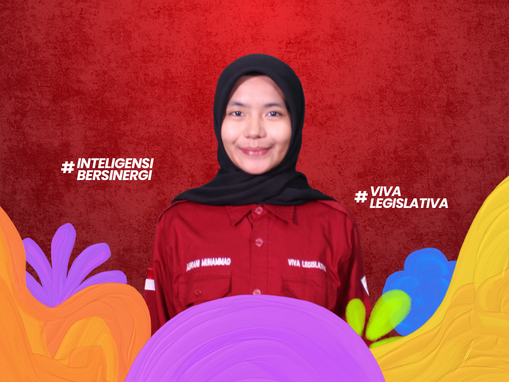
KETUA UMUM
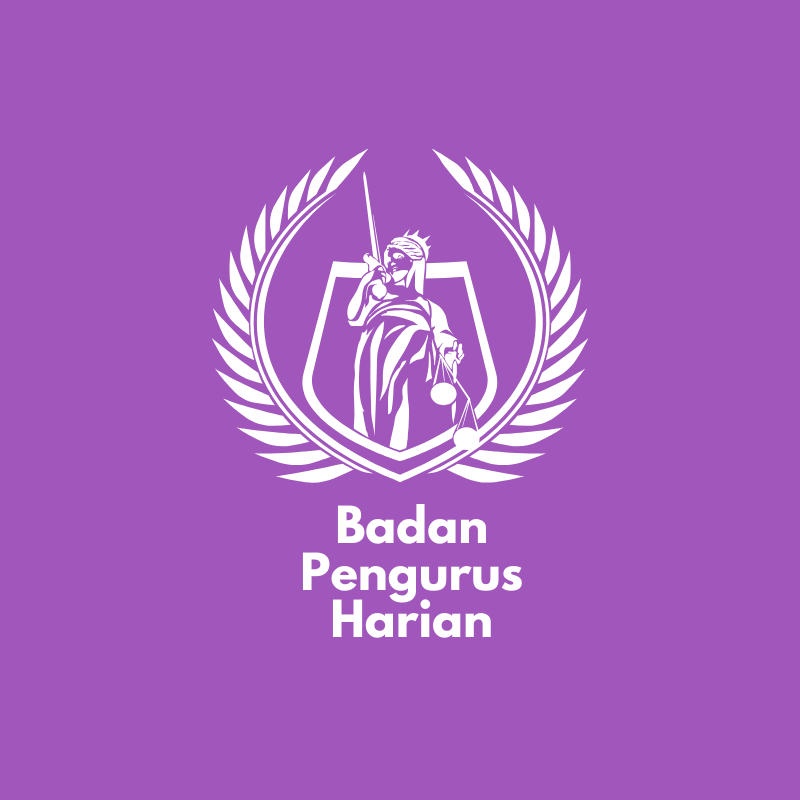
Mengenal lebih dekat BPH Dewan Legislatif Mahasiswa Poltekkes Kemenkes Jakarta III Periode 2026.
Halo Mahasiswa Poltekkes Kemenkes Jakarta III!
Perkenalkan kami dari Badan Pengurus Harian Dewan Legislatif Mahasiswa Poltekkes Kemenkes Jakarta III Periode 2026.
Badan Pengurus Harian memiliki peran dalam mengoordinasikan jalannya organisasi, memastikan pelaksanaan program kerja, serta menjaga koordinasi antarbagian di dalam Dewan Legislatif Mahasiswa agar dapat berjalan secara terarah dan efektif.
Kami percaya bahwa organisasi yang baik dibangun melalui koordinasi, tanggung jawab, dan kerja sama. Oleh karena itu, BPH hadir untuk mengarahkan, mengoordinasikan, dan memastikan setiap fungsi organisasi berjalan sebagaimana mestinya.
Yuk, kenal lebih dekat dengan Badan Pengurus Harian DLM!

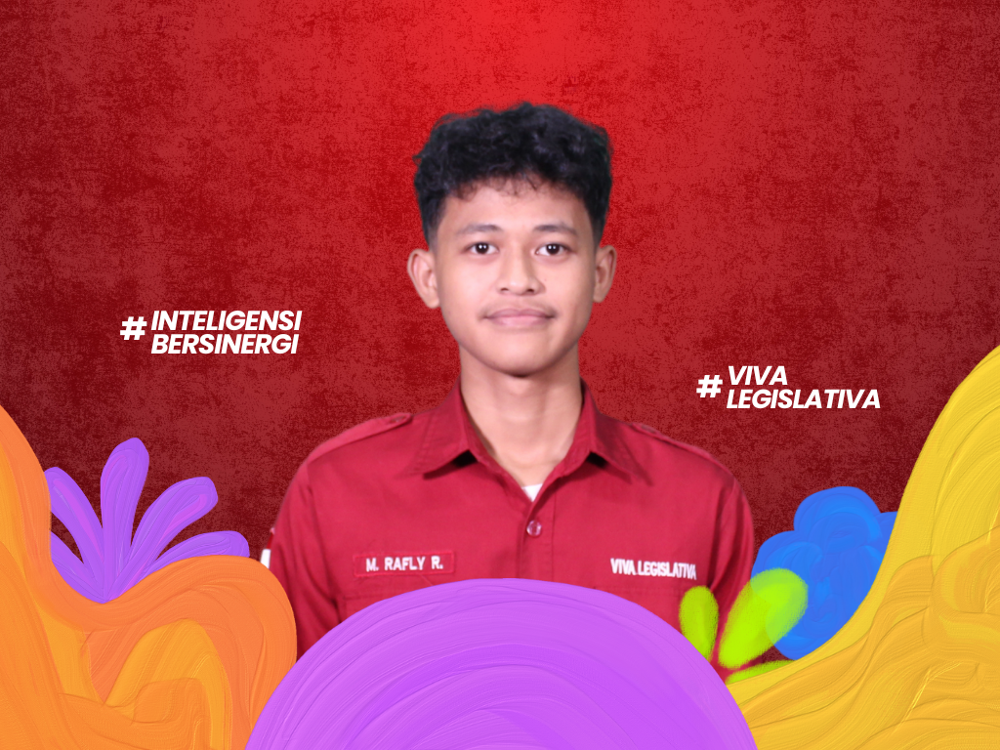
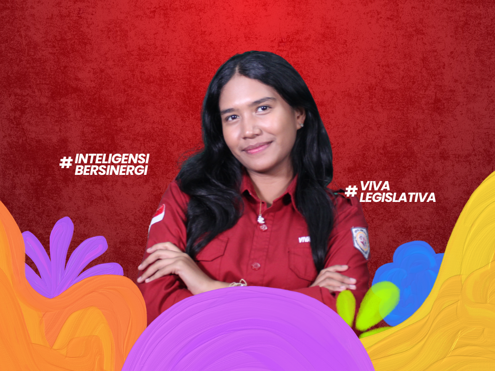
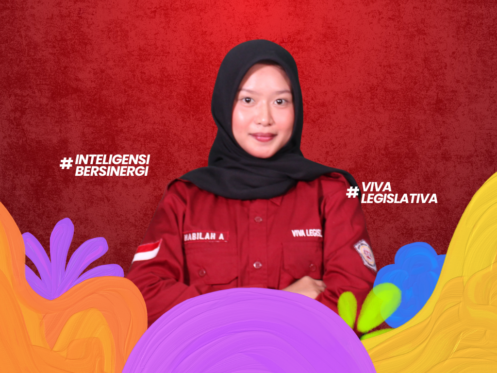
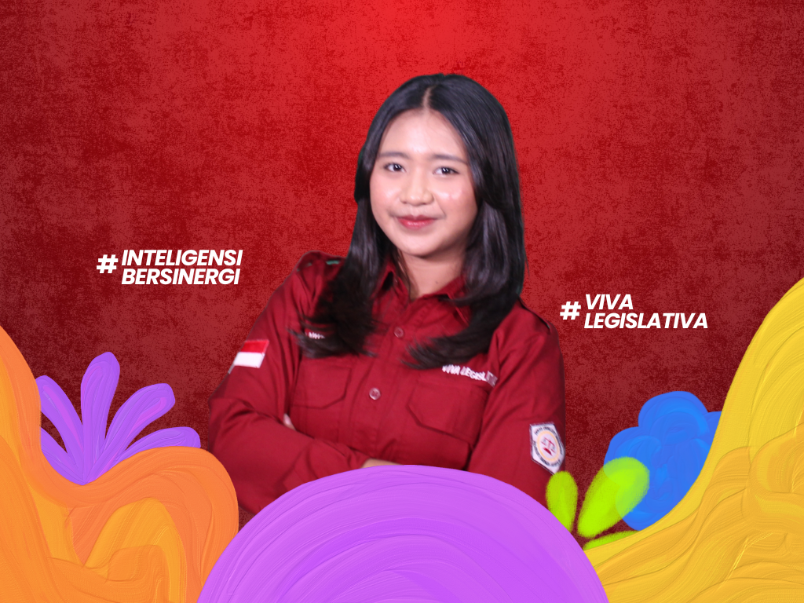
Mengontrol dan mengawasi setiap program yang akan dijalankan serta kebijakan yang akan diterapkan di LKM Poltekkes Kemenkes Jakarta III.
Mengelola administrasi dan keuangan.
Membangun komunikasi yang baik agar terciptanya keharmonisan hubungan internal maupun eksternal Dewan Legislatif Mahasiswa.
Merupakan rapat internal DLM Poltekkes Kemenkes Jakarta III.
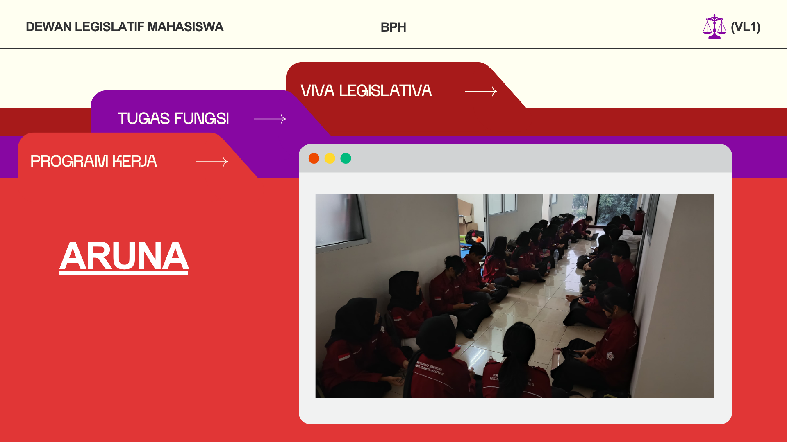
Merupakan kegiatan pencerdasan satu komisi di satu hari.
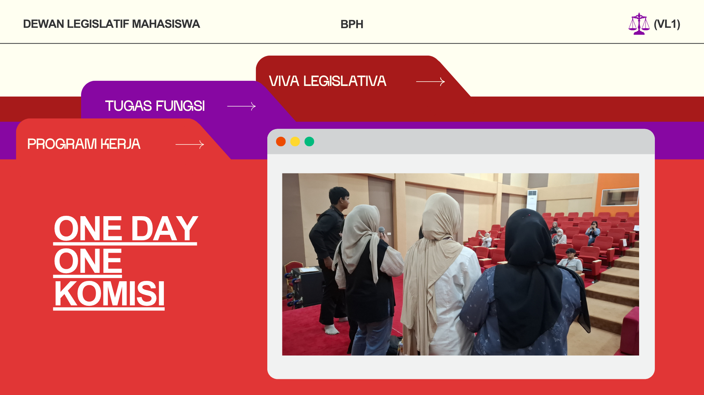
Merupakan rekrutmen dan penyeleksian bagi mahasiswa tingkat I.
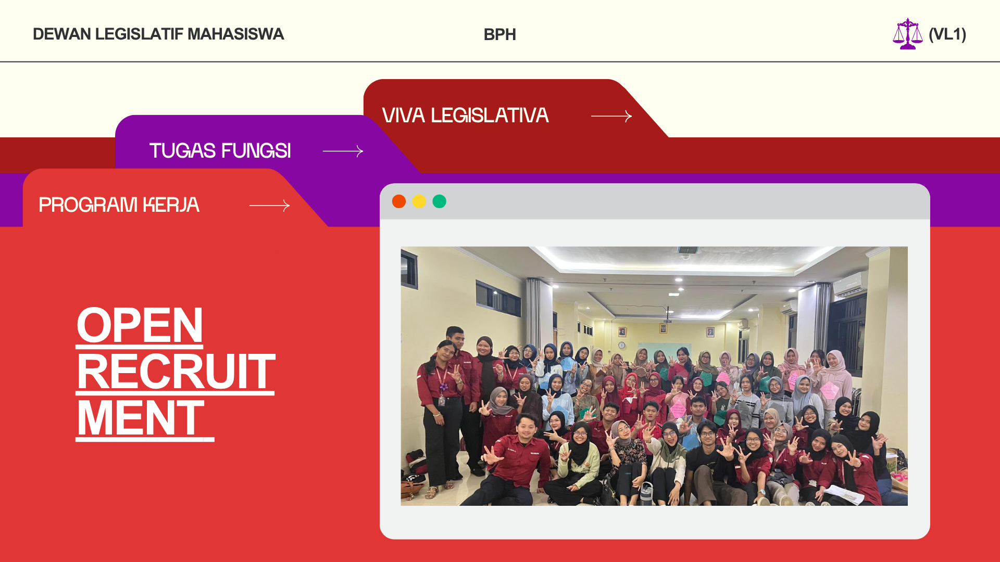
Dekat Dengan Legislatif merupakan pelatihan skill dan karakter organisasi bagi calon formatur DLM Poltekkes Kemenkes Jakarta III.
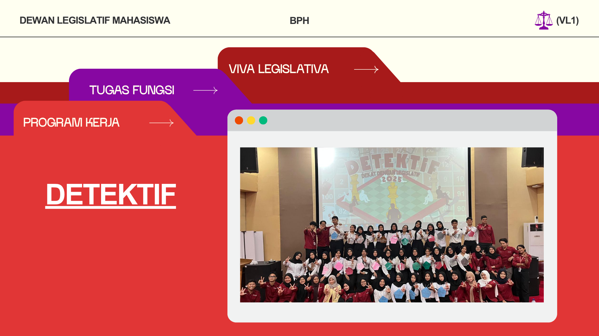
Pembelian inventaris dan mengatur segala sesuatu yang berhubungan dengan kesekretariatan DLM Poltekkes Kemenkes Jakarta III.
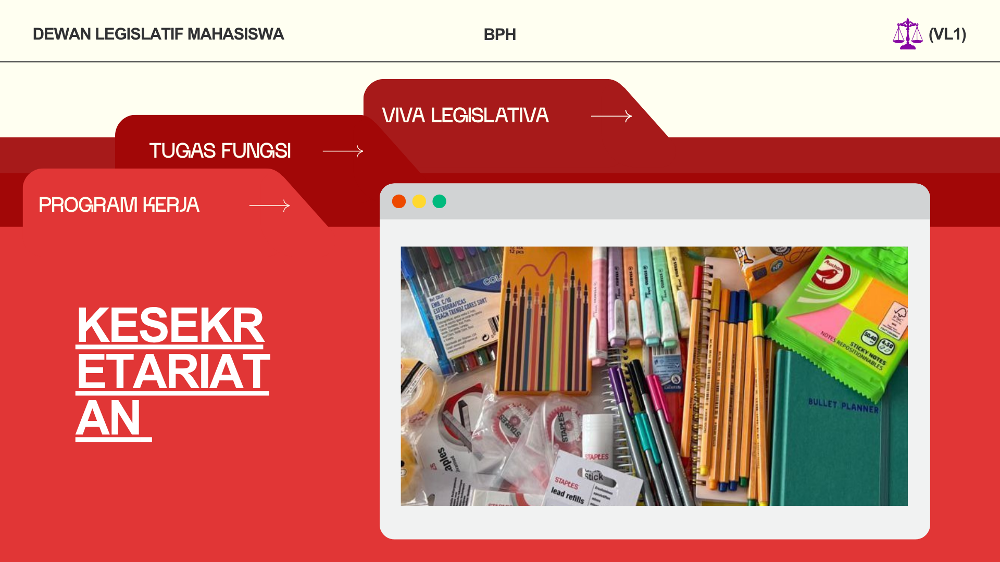